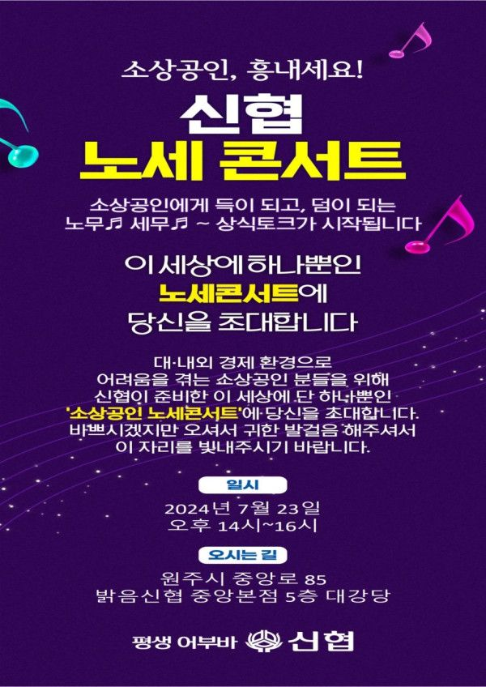
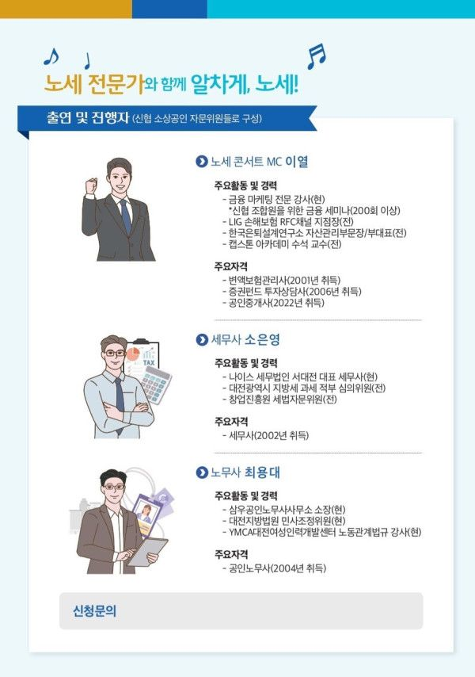
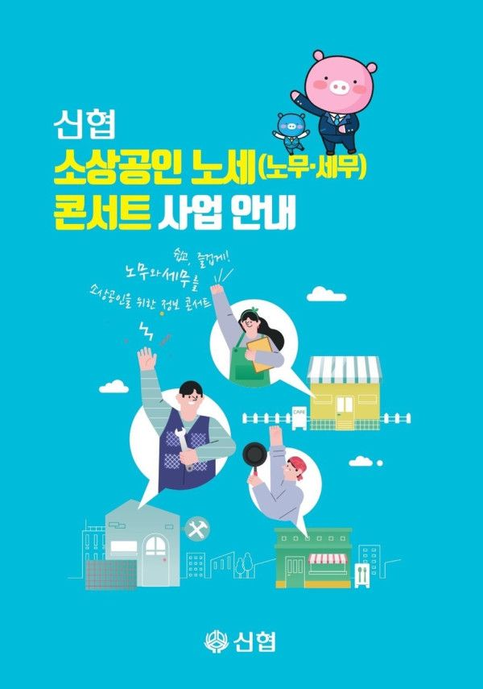
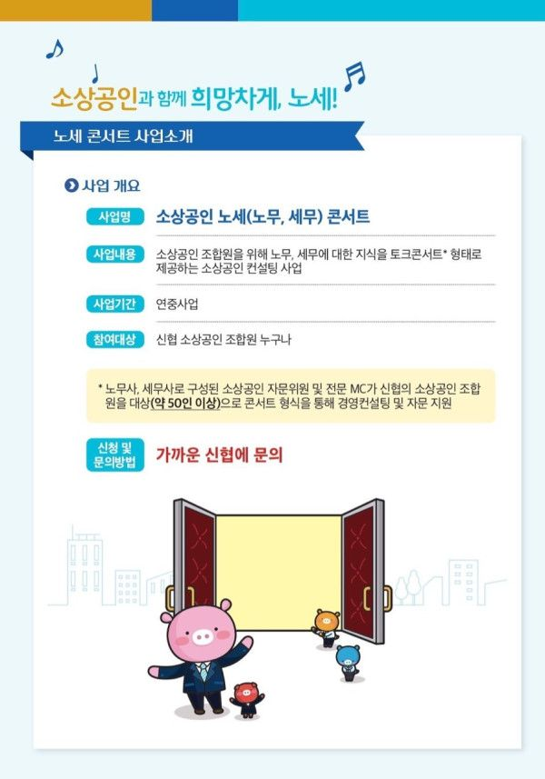
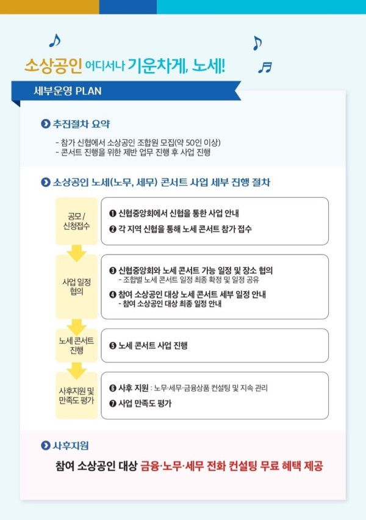

☆소상공인 조합원을 위한 노무,세무 콘서트 안내☆
????사업명: 소상공인 노세(노무, 세무)콘서트
????일 시: 2024년 7월 23일(화요일) 14시-16시
????대 상: 밝음신협 소상공인 조합원 누구나
????장 소: 원주시 중앙로 85 밝음신협 중앙본점 5층 대강당
밝음신협에서 소상공인 조합원의 경제적 성장을 지원하기 위하여 노세 콘서트를 준비하였습니다.
노세(노무,세무) 콘서트란 소상공인 조합원께 노무, 세무에 대한 지식을 재밌는 토크콘서트 형태로 제공하는 컨설팅 사업입니다.
전문적인 신협 소상공인 자문위원(세무사, 노무사) 및 전문 MC가 소상공인 조합원을 대상으로 경영컨설팅 및 자문 지원을 하며, 참여 조합원께 금융, 노무, 세무 전화 컨설팅 혜택을 무료 제공하여 지속적인 관리를 제공합니다.
조금 더 체계적인 지원을 위하여 50명의 선착순으로 컨설팅을 제공하고 있으니, 아래의 링크를 통하여 참가신청 부탁드립니다.
더 자세한 문의사항은 방문 및 유선상담을 통해 도와드리겠습니다.
☎ 본 점: 033-745-4571
☎ 단관지점: 033-764-4575
☎ 무실지점: 033-748-6900
☎ 혁신지점: 033-735-4575